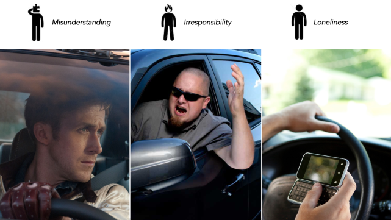
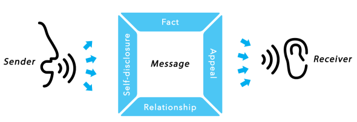
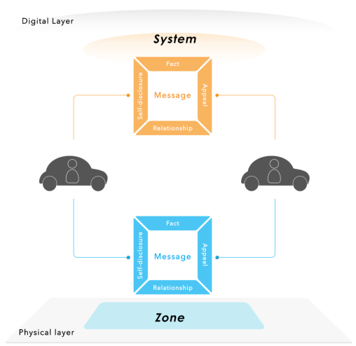

Social Car: Enhancing Communication between Drivers by Digital Augmentation
The road environment can be seen as a social situation and road user safety can be viewed as not just skills-based and rule-governed. Drivers need to coordinate with each other to share the infrastructure. Lights, horn and speed information are the most frequently used tools to exchange information, limiting both the range and the bandwidth of the connectivity, which may lead to misunderstanding, irresponsibility and social isolation. With everywhere available connectivity and the broad penetration of social network services, the relationship between drivers on the road may gain more transparency, enabling social information to pass through the steel shell of the cars and giving opportunities to reduce anonymity and strengthen empathy.
Limitation of information exchanging leads to misunderstanding, irresponsibility and social isolation
The communication between drivers is an odd form of social interaction compared to face-to-face interaction because of two constraints: speed of the vehicles and enclosed position of drivers. First, the encounters between drivers are often rather short, ranging from a couple of seconds if the cars meet in opposite lanes to minutes if they travel in the same direction. Second, the interaction is influenced by the drivers being inside vehicles made of steel and glass. The Bandwidth of interaction are restricted to signals of cars such as horn, indicator or using the clunky movement of the vehicles as a form of body-language. This kind of limitation causes three major problems:
 1) Irresponsibility: The distance between drivers and the vehicle design (metal frames, tinted windows) provide a feeling of anonymity. It is easier to project blame or attribute intentionality for their driving offense onto an unknown person who cannot be seen than it is when the person is known, or their facial expression can be seen.
2)Misunderstanding: The current signal system with little humanity and courtesy of vehicle seems insufficient for expressing driver's intention and providing social context. As a result, driver tried to invent means of exchanging social cues, using headlights, hazard lamps, blinkers, and even, hand gestures, in what Renge has dubbed “roadway interpersonal communication”, for the purpose of transferring more social information to reduce misunderstanding on the road.
3)Social isolation: While driving, people are encapsulated in a domestic, cocooned, moving capsule, an iron bubble. Being constrained in front of their steering wheels and “interacting” monotonously with non-human-like machines on the road for a long time that provides a feeling of disconnection, which may result in tediousness, loneliness and fatigue. Therefore, while our body are physically constrained in vehicle, our minds are trying to escape from the “iron cages” and regain connection with the outside world by, for example, listening to the radio, making a phone call or texting, even though they know this activity may lead to distraction and dangerous situation.
Communication model
For further analysis of the communication between drivers, we utilized the “four sides” model, which was proposed by Schulz von Thun based on the work on human communication by Karl Buehler and Paul Watzlawick. According to this model, any message principally contains information on four facets: content layer, self-revelation layer, relationship layer and appeal layer. Conflict often happened when one driver misunderstanding another drivers’ intention. For example, when a driver is overtaken by a sports car with high speed, he may think that it is a rude people in a fancy car speeding on the road. But actually they are from the same university. Furthermore, the sport car driver is just in a hurry of sending his sister to the hospital and wants to apologize for the aggressive overtaking behavior.
 Concepts
Under the four sides model, three concepts, which emphases on self-revelation and relationship sides, were proposed for further evaluation.
Three prototypes based on corresponding concepts, is designed, developed and integrated in a driving simulator. The driving simulator includes a steering wheel, seat, pedals, gears, three 32” screens, speakers, a 10-inch screen and a LeapMotion sensor.
“CarNote” (Self-revelation)
Mr. Lee wants to go to the airport, unfortunately he encounters a traffic jam in the city. When he enters the highway there is only 1 hour left before the airplane takes off. Then he put a virtual sign “In a hurry to the Airport” on the top of his car to show his situation. This sign could only be used for 2 hours per month. When other drivers around knows his situation they have more tolerance to his fast driving behavior.

“iSticker” (Relationship)
Peter lives in Eindhoven, he is a Marvel hero fan and likes the soccer team PSV as well. Yesterday He chose 3 free virtual icons in the “CarBadges” online service for his car: “Marvel hero”, “PSV” and “Eindhoven”. Now he is on the highway to Berlin for watching the UEFA European Championship, PSV vs FC Bayern Munich. On the road he sees several drivers who also have “Marvel hero” badges when they approach. He knows that they could see his as well because they chose the icons in same category. But which excites him more is that he finds several cars passing by that are also put on “PSV” and “Eindhoven” badges, indicating they are PSV fans and might go to Berlin for the match as well.

“MusicHound” (Self-revelation & Relationship)
Donald has been driving alone for 2 hours on the highway. There are not many cars on the road at this moment, the long tedious journey makes him a little bored and lonely. He decides to opens the “Music-Around-Me” application of his car. Several minutes later, by approaching a car in front of him, a slight rhythm of “Only Love” is rising in his cabin. The text indicates that the music is played by the front car. “It’s a nice song”, he thinks. So he waves his hand to get the song playing in his own car. Several second later, a “bling” sound comes from his speaker, he smiles, as that indicated the car behind him get this song from his as well.